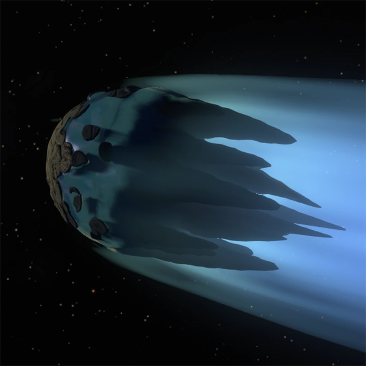
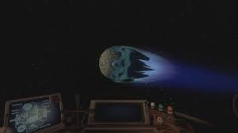
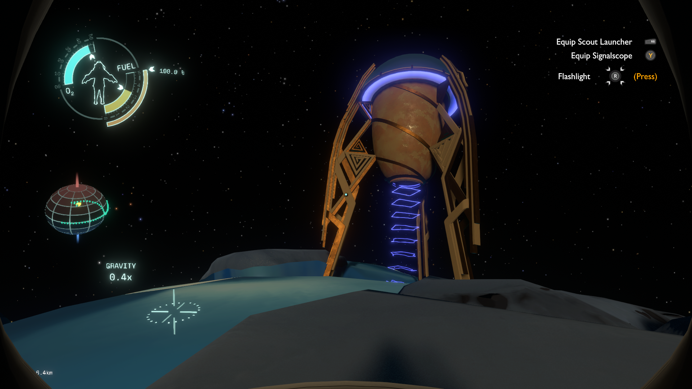

- 
- 
- 
-

Interloper is a comet on a highly elliptical orbit around the sun. It is relatively small, but is fairly easy to land on. Due to the Interloper's lack of gravity in its interior, it would be advised to explore this comet on the highest part of its orbit or it is possible to be pulled away into the Sun. It is the newest celestial object in the solar system and is the origin of all Ghost Matter in the solar system.
Approximately 20 minutes into the cycle (2 minutes until the sun goes supernova) , the Interloper will collide with the sun and be destroyed.
The comet's exterior itself is made of two sections: The sun-facing side and the dark side.
The sun-facing side is aptly named, because it never faces away from the sun, no matter where the comet is on its irregular orbit. There is a chasm of ice etched into the surface of the comet that melts and opens up as it gets closer to the Sun, allowing the player to access the inside of the comet.
The dark side of the comet is encased in the glow of the comet's tail, which is completely harmless to the player and their ship. This side of the comet consists mostly of icy pillars, one of which has the Frozen Nomai Shuttle stuck inside.
The inside of the comet is filled with swirling passages of ice, which can make it difficult for the player to navigate. Some of these passages lead to Ghost Matter and instant death. These passages eventually lead to the Ruptured Core.